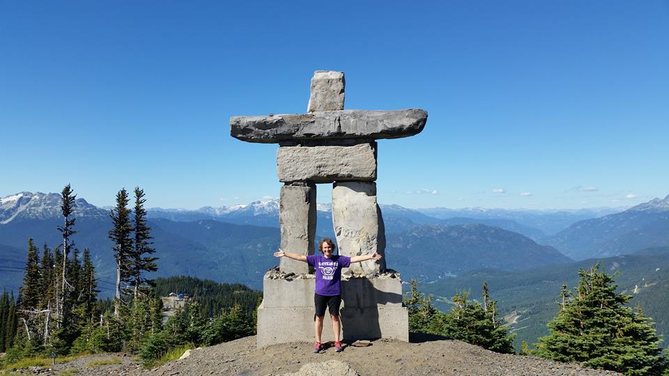

About Me
I love to research and find solutions to problems. As a full-stack Web Developer with experience in HTML, CSS, Javascript, JQuery, APIs and Node, I get fired up about writing code and the high of successful debugging. I earned my Full-Stack Web Development certificates through Kal Academy and the University of Washington. I enjoy continual learning and implementing new knowledge. Previously I was a Technology Specialist for the Edmonds School District and have been a volunteer web developer (front-end) for many sites.
Aside from coding I'm into reading (usually non-fiction) and traveling to broaden my horizons. We live in an awesomely diverse world and I'm excited to know more about it. My personal motto can be summarized by Ellen DeGeneres..."Be kind to one another."